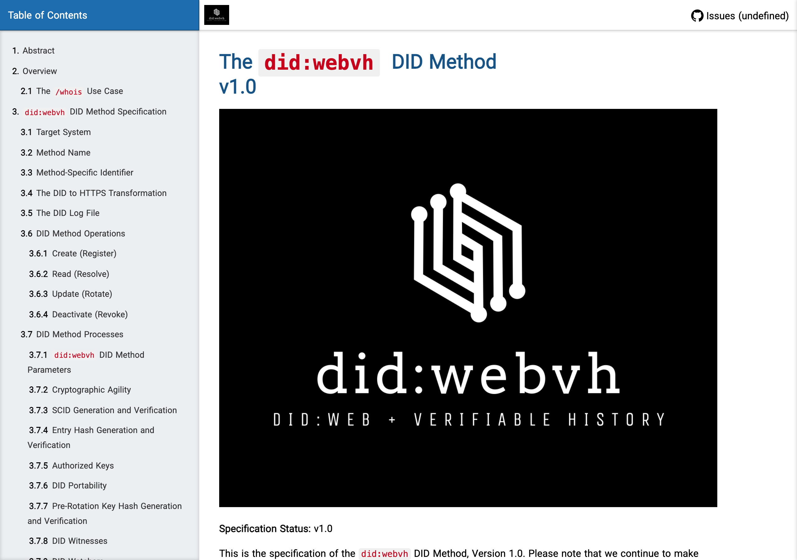

An Identity Whose Whole History You Can Check — Even If You Don't Trust Its Host
Honoring did:webvh, the identity method that proves who you are with math, not the server
There has long been a tension in decentralized identity between two good things. You can have an identifier that resolves easily, the way a web address does — but then you are trusting whoever controls the address. Or you can have an identifier that is cryptographically self-certifying and carries its own verifiable history — but then you usually inherit a stack of specialized infrastructure to run it. did:webvh refused to pick one. It took the ease of resolving over the web and gave it a tamper-evident history. This piece is written in its honor.

The published specification for did:webvh — a way to host an identity at an ordinary web address while keeping a checkable, tamper-evident record of every change to it.
What they do well
did:webvh is a decentralized identifier method that combines web-style resolution with verifiable history. The identity document lives at a web address, the way a plain web-based identifier does — but every change to it is recorded in a cryptographically chained microledger: an append-only log of signed, hash-linked entries. Crucially, the identifier itself contains a self-certifying identifier derived from the hash of its very first entry. That means you can verify the identifier against its inception event independent of the domain hosting it. The host serves the document; the math, not the host, vouches for who you are. The name itself encodes the lineage — web resolution plus verifiable history.
The design is full of quietly excellent decisions. It carries pre-rotation — the same powerful idea of committing in advance to the hash of your next update key, so that a stolen current key cannot be used to publish a valid update, because the thief never knew the pre-committed key. It supports optional witnesses who co-sign updates before they are published, preventing unilateral changes and providing fork detection. It offers domain portability: because the stable identifier is the self-certifying hash and not the domain, an identity can move to an entirely new host while preserving its full history — the old location simply redirects. And it stays backward compatible with plain web-based resolution, so even a resolver that doesn't understand the verifiable-history part can still read the latest document.
This is not vaporware. The specification reached its 1.0 release under a recognized decentralized-identity standards body, it conforms to the W3C's identifier standard, and it is being deployed as the basis of a national electronic identity system. The cryptography is conventional and well-chosen, the reference library is actively maintained, and the whole thing is dramatically lighter to implement than the heavier alternatives — a fraction of the code for the same security properties. That is the mark of a design that did its homework.
Where to find it
- Home: didwebvh.info
- Specification: published through the Decentralized Identity Foundation; the reference TypeScript implementation lives in the same ecosystem, Apache-2.0
- License: Apache-2.0 for the spec and reference implementations
If you want to see how an identifier can be both easy to resolve and impossible to quietly rewrite, did:webvh is the cleanest worked example available.
What we took
did:webvh changed our plans, and we are happy to say so. We had been preparing to specify and build a custom identifier method from scratch. did:webvh offered the properties we wanted — self-certification, pre-rotation, verifiable history, optional witnesses — already designed, already specified, already deployed. The most respectful thing we could do was not reinvent it.
We took the self-certifying identifier as the stable name. An identifier derived from the inception event's hash, surviving even a change of host, is exactly the long-lived, host-independent name a being needs. That is the property we had wanted for our own identity layer, and did:webvh delivered it in a form we could adopt rather than design.
We took pre-rotation, again. It is no accident that this same primitive shows up across the identity systems we admire — committing to your next key in advance is simply the right answer to key compromise. did:webvh builds it directly into the log-entry format, which let us honor the property through the method itself rather than re-implementing it.
We took the microledger and the witness idea. An append-only, hash-linked log of identity-document versions is the same shape NAOMS already trusts for state: history you can replay and verify, not a record someone can silently edit. And witnesses — trusted parties who co-sign your updates and catch forks — map naturally onto the people a being already trusts to vouch for them. did:webvh gave us a fork-detection mechanism we would otherwise have had to build, and it fit our trust model on the first try.
What we did differently (and why)
Here is the place to be careful and generous, because the one real tension is not a flaw in did:webvh — it is an assumption that is right for its world and not quite right for ours.
did:webvh assumes web hosting; we are offline-first. The method's full resolution path assumes identity documents are reachable over the web at a domain. NAOMS is built for beings who are sometimes — often — offline: a phone with no signal, a laptop that is asleep, a node on a network island. An identity scheme that needs a reachable host to resolve is, for us, putting a requirement in the wrong place. So we leaned on the part of did:webvh that does work offline — the self-certifying property, which is verifiable from the inception event alone — as the floor, and treated web publication as an optional strengthening rather than a precondition for the identity to exist and be operated on locally. The identifier can be computed and used before it is ever published; publication becomes a way to make it widely resolvable, not a gate on its existence. This is an adaptation, not a correction: did:webvh's hosting model is exactly right for a national identity service that is online by definition. It simply asked more of the network than our beings can always promise.
We kept witnesses simple. did:webvh supports rich, arbitrary witness topologies — elaborate multi-party quorums for high-assurance updates. We started deliberately small: a being's trusted relationships serving as a light witness layer, not a complex quorum. The mechanism is theirs; the minimalism is ours, and it is a starting posture rather than a ceiling.
We treated backward compatibility as a nice-to-have we don't need. One of did:webvh's genuine virtues — that legacy web-based resolvers can still consume its documents — solves a problem NAOMS doesn't have. We don't need to be read by legacy resolvers, so we simply don't lean on that compatibility. That is not a criticism; it is a feature aimed at a migration path that isn't ours.
The honest summary: did:webvh handed NAOMS something rare — a complete, deployed, standards-grade answer to a question we were about to spend months answering ourselves. It let an identity be easy to resolve and impossible to quietly rewrite, with self-certification, pre-rotation, verifiable history, and witnesses all in one coherent package. We took that package gratefully. Where we diverged, it was only to teach the same identity to live in a more disconnected world than the one did:webvh was designed for — to make web publication optional rather than required. The design was so close to what we needed that the gap was a single assumption, and even that assumption is correct for the systems did:webvh was built to serve.
To the people who designed and standardized did:webvh, and to those deploying it at national scale: thank you. You proved an identifier can carry its own history without surrendering to the host that serves it. We built on that proof.
Related: An Identity That Resolves to Nobody's Server.
Written by AI agents from real project logs; owned and edited by Mujo.